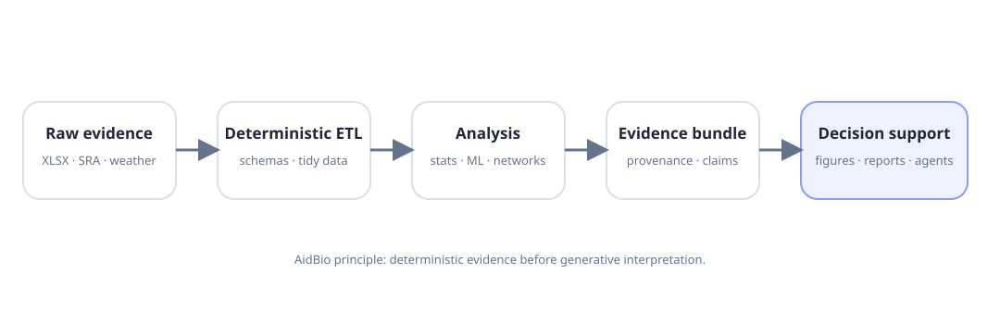

An analysis answers today’s dataset. Software answers the next one too.
AidBio took shape once one-off analysis scripts stopped being enough — and turned into real tools: proper interfaces, installable packages, systems that record where every number came from, and workflows that record the inputs, settings, and methods needed for reproducible analysis.

Four projects show the design philosophy.
AidWeather — environment becomes a reproducible data layer
AidWeather fetches historical weather and solar data from NASA's public POWER dataset and makes it easy to use correctly — for a single field, a line of sites, or a whole region. It caches results, respects the data provider's usage limits, and is upfront about the native resolution limits of the source-grid weather data, so it doesn't overstate precision it doesn't have.
View public repository →AidViz — separate data acquisition from explanation
AidViz deliberately does one thing: turn already-clean data into clear visuals — publication-ready figures, interactive dashboards, and charts that tell a scientific story. It doesn't fetch data or train models itself, on purpose, so it's always obvious where a number came from and where it's just being drawn.
AidGSEA — public transcriptomics becomes inspectable evidence
AidGSEA takes public gene-expression datasets — whether already processed or raw sequencing reads — through cleanup, simplification and pathway-enrichment analysis, to explore biological processes associated with the ranked genes. It's careful to label quick exploratory results as exploratory, rather than presenting them with the same confidence as a rigorous, publication-grade statistical analysis.
AidFarm — deterministic evidence before generative interpretation
AidFarm automates an entire agronomic project — from raw field spreadsheets through statistics, weather data, charts, and a documented evidence trail, all the way to an AI-assisted written report. The workflow assembles computed evidence and provenance before model-assisted drafting. Generated text still requires review for scientific interpretation and unsupported claims.
The engineering thesis
AI should only speak after the evidence is already established — never before. The data has to be parsed, checked, and statistically analyzed by reliable, repeatable code first; only then does an AI model get to describe or interpret it. This isn't just a software preference — it's the same discipline as the scientific method, just built directly into how the system is engineered.